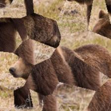

Publications
All papers and datasets from the ACM AI Lab.
All Publications
-

Learning to Detect Label Errors by Making Them
Penquitt, S., Riedlinger, T., Heller, T., Reischl, R., Rottmann, M. (2025)
arXiv
-

From Label Error Detection to Correction
Penquitt, S., Klees, J., Cakaj, R., Kondermann, D., Rottmann, M., Schmarje, L. (2025)
arXiv
-

Shape Bias & Robustness via Cue Decomposition
Heinert, E., Gottwald, T., Mütze, A., Rottmann, M. (2025)
arXiv
-

TARS: Traffic-Aware Radar Scene Flow Estimation
Wu, J., Braun, M., Spata, D., Rottmann, M. (2025)
arXiv • ICCV (2025)
-

SparseRadNet: Sparse Perception Neural Network on Subsampled Radar Data
Wu, J., Klees, J., Meuter, M., Schoeler, M., Rottmann, M. (2024)
arXiv • ECCV (2024)